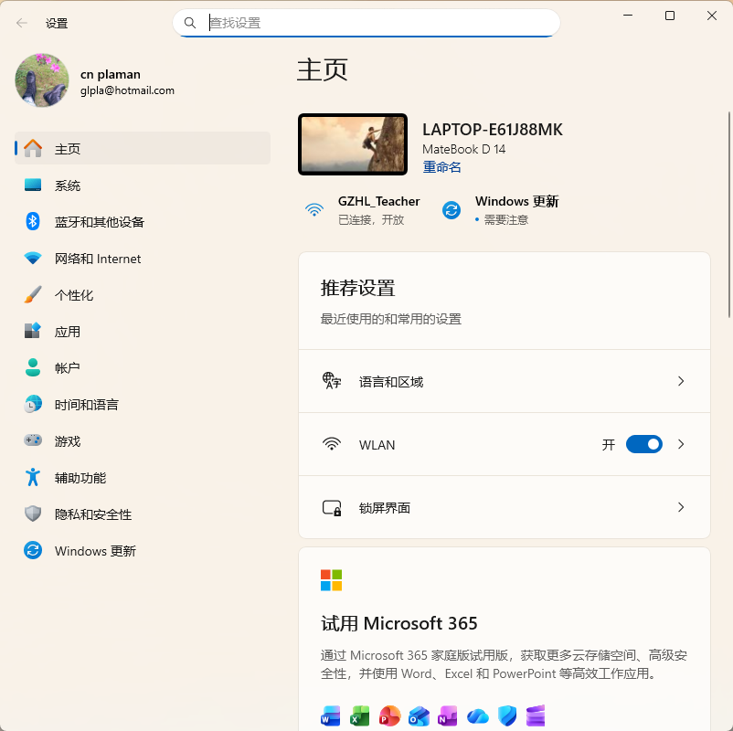
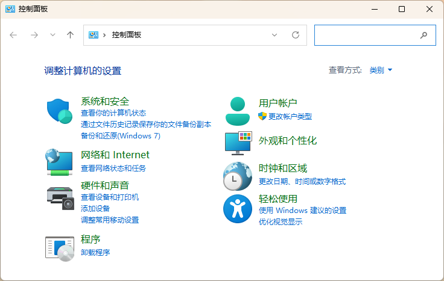

系统管理
System
- 内容 Contents
- 系统信息 Information
- 控制面板 Control Panel
- 系统管理和维护 Maintain
系统信息 Information
- 也叫设置面板
- 对系统的更多设置
- 涵盖个性化设置、硬件配置、软件管理、个人隐私、系统更新的所有日常与高级设置，取代了传统控制面板的大部分功能
- 并持续演进
- 快捷键：Win + I

设置面板
- 系统
- 屏幕：分辨率、缩放、亮度
- 声音
- 通知
- 网络和Internet
- 网络连接
- VLAN
- VPN
- 个性化
- 背景
- 颜色
- 屏幕保护
- 主题
- 任务栏
- 应用
- 卸载
- 其它管理
- 账户
- 个人信息
- 登录
- 用户
- 时间和语言
- 时间设置
- 输入法设置
控制面板 Control Panel
- 从开始菜单打开或从搜索框搜索并打开
- 大部分操作会跳转到设置面板
- 程序的卸载
- 不要直接删除程序
- 用户账户
- 外观和个性化
- 时钟和区域

控制面板
系统管理和维护 Maintain
- 任务管理器
- Ctrl + Alt + Del
- 任务管理器提供了一种监视系统性能的简便方法。通过它来查看计算机中当前正在运行的应用程序、进程、服务、性能及用户
- "进程"选项卡，可以查看系统当前运行进程的详细信息，如用户名、CPU占有率、进程ID等信息
- "服务"选项卡，可以查看当前系统服务的工作状态等详细信息
- "性能"选项卡，可以了解系统当前的性能情况。对话框中用图表的形式详细显示了当前系统CPU使用率和内存使用情况，其显示的内容是动态更新的
- 磁盘管理
- 磁盘清理
- 系统备份
- 系统恢复
练习 Drill
设置桌面背景
- 根据提供的图片设置桌面背景
安装和卸载软件
- 根据提供的截图软件 Snipaste，完成安装、使用和卸载
- 安装：双击安装包
- 使用：请访问 Snipaste
- 卸载：设置面板 → 应用